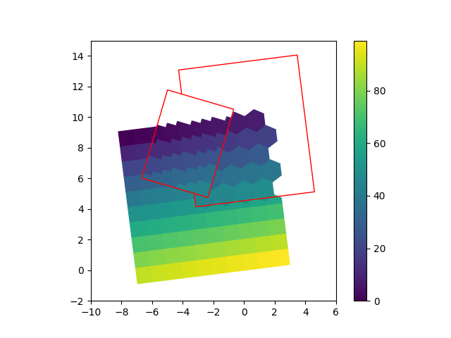

Note
Go to the end to download the full example code.
Sampling DataTiles with other tiles
Sample data from an existing DataTile onto other tiles with different resolutions and cell shapes.

import numpy
from shapely import Polygon
from gridkit import DataTile, HexGrid, RectGrid, Tile
from gridkit.doc_utils import plot_polygons
# Create a new grid
# Use float as data type because NaNs nicely show up as transparent in matplotlib
data = numpy.arange(10 * 10, dtype=float).reshape(10, 10)
grid = RectGrid(size=1, rotation=7.2)
tile = Tile(grid, (-7, 0), data.shape[1], data.shape[0])
data_tile = DataTile(
tile,
data,
nodata_value=numpy.nan,
)
upscaled_grid = RectGrid(size=0.3, rotation=-16.3)
upscaled_tile = Tile(upscaled_grid, (-80 // 3, 40 // 3), 15, 20)
upscaled_data_tile = upscaled_tile.sample_nearest_from(data_tile)
downscaled_grid = HexGrid(size=1.3, rotation=7.2)
downscaled_tile = Tile(downscaled_grid, (-2, 4), 6, 8)
downscaled_data_tile = downscaled_tile.sample_nearest_from(data_tile)
# Plot the grid in it's native CRS
import matplotlib.pyplot as plt
fig, ax = plt.subplots()
ax.set_aspect("equal")
# Show initial DataTile
plot_polygons(
data_tile.to_shapely(),
colors=data_tile.to_numpy().ravel(),
cmap="viridis",
add_colorbar=True,
set_zoom_to_bounds=False,
ax=ax,
)
# Show downsampled tile
plot_polygons(
downscaled_data_tile.to_shapely(),
colors=downscaled_data_tile.to_numpy().ravel(),
cmap="viridis",
set_zoom_to_bounds=False,
vmin=data_tile.min(),
vmax=data_tile.max(),
ax=ax,
)
plot_polygons(Polygon(downscaled_data_tile.corners()), colors="red", fill=False, ax=ax)
# Show upscaled tile on top
plot_polygons(
upscaled_data_tile.to_shapely(),
colors=upscaled_data_tile.to_numpy().ravel(),
cmap="viridis",
set_zoom_to_bounds=False,
vmin=data_tile.min(),
vmax=data_tile.max(),
ax=ax,
)
plot_polygons(Polygon(upscaled_data_tile.corners()), colors="red", fill=False, ax=ax)
plt.xlim(-10, 6)
plt.ylim(-2, 15)
plt.show()
Total running time of the script: (0 minutes 0.085 seconds)